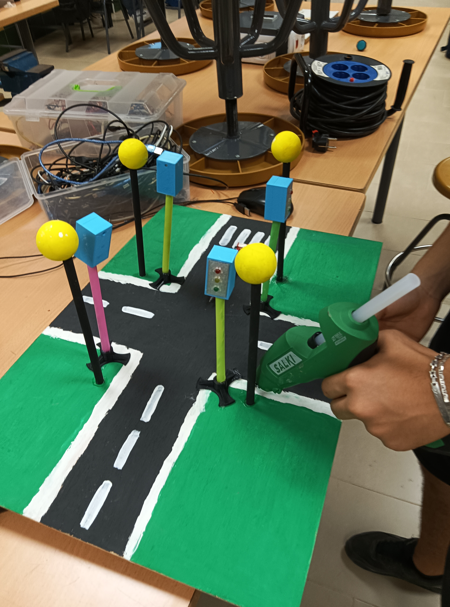

FASE CONSTRUCCIÓN
¿CÓMO HEMOS CONSTRUIDO ESTE SEMÁFORO?
- UNIÓN DE CABLES Y MONTAJE DEL CIRCUITO
- UNION DE PARTES
- Semáforos para Ciclistas
1-UNIÓN DE CABLES Y MONTAJE DEL CIRCUITO
Descripción: En esta fase se programa y se juntan todos los cables formando la serie de cableado para que el semaforo prenda correctamente.

2-UNION DE PARTES
Descripción: En esta fase vamos a unir todas las partes del semaforo en el carton pluma para formar una maqueta del semaforo.
3-Semáforos para Ciclistas
Descripción: En la siguiente fase que vermos a continuacion se veran los resultados del proyecto.